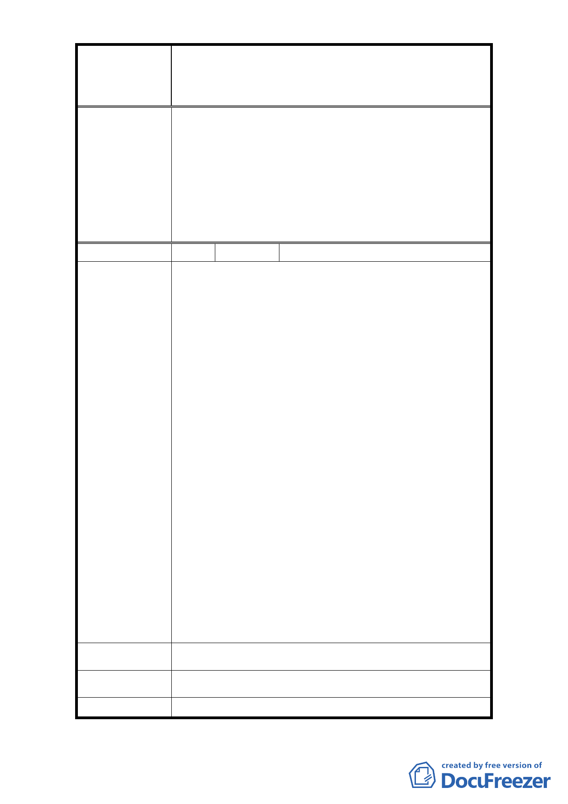

修訂臺北市大安區青田街保存區聚落風貌保存專用區細部計
案
名
畫、變更部分第三種住宅區、第三種商業區(特)為第三種住宅區
(特)(日式宿舍)及第三種商業區(特)(日式宿舍)暨劃定週邊地
區都市設計管制細部計畫案
一、本修訂案同意依據專案小組審查意見在兼顧保存
文化資產、歷史街區整體文化風貌形塑及土地所有
權人開發權益等考量下，將原公展範圍內之計畫區
委 員 會 決 議 依日式宿舍分佈密度與原貌保存程度區分為「文化
資產核心街區」、「歷史風貌街區」、「緩衝區」等三
個層級管制。
二、 依市府回覆意見辦理。
編
號 35
陳情人 和樂工程顧問有限公司
1.依據「修訂臺北市大安區青田街保存區聚落風貌保
存專用區細部計畫、變更部分第三種住宅區、第三
種商業區（特）為第三種住宅區（特）（日式宿舍）
及第三種商業區（特）（日式宿舍）暨劃定週邊地區
都市設計管制細部計畫案」第二次專案小組會議紀
錄（詳附件二）審查意見第三點所示，請文化局本
於權責予以研議並檢討是否解除青田街 7 巷 9 號（以
下簡稱本建物）管制。
2.本公司據此行文予文化局請求審認本建物有無保存
之需要（詳附件三）。
陳 情 理 由 3.依據附件一說明二所示，文化局明確揭示經過兩次
鑑定，皆認為本建物不具文化資產保存價值。
4.依據附件一說明三所示，本建物為 貴會決議納入
都市計畫細部計畫管制，而非文化局依資產保存相
關法令所管制。
5.依據附件一說明四所示，文化局主張本建物從未具
有文資身份，故無解除身份問題，請 貴會本於權
責並依據文化局之主張解除本建物管制。
6.請 貴會依第二次專案小組會議審查意見及文化局
審認結果，逕行將本建物解除管制，否則所有權人
將依法提請訴願，以維護自身權益。
建議辦法
市 府 回 覆 意 見 同編號 7 回覆意見。
委 員 會 決 議 同編號 7 決議。
- 43 -